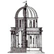

El mecenazgo artístico de los Reyes Católicos (II)
(Haz clic en las imágenes para verlas con más detalle. En algunos casos, hacer clic una segunda vez permite ampliarlas aún más.)
Donato Bramante, el Tempietto ("Templete") de San Pietro in Montorio (Roma)
Si bien es cierto que los Reyes Católicos financiaban en sus propios reinos obras de arte que seguían las pautas tradicionales de la arquitectura gótica y el estilo flamenco en la pintura —con las innovaciones dentro de ese esquema que implicaba el estilo plateresco—, también es cierto que contribuyeron al nuevo estilo renacentista de Italia al financiar una de las obras arquitectónicas más emblemáticas del Renacimiento: el tempietto (o templete) diseñado por el arquitecto italiano Donato Bramante y dedicado a San Pedro. Se construyó en 1502, con dinero donado al papa Julio II por los Reyes Católicos, en el Janículo, una alta colina romana donde los reyes de Castilla y Aragón tenían propiedades. Se supone que el templo marca el lugar del martirio del santo. Demasiado pequeño para albergar una congregación, se concibió como un monumento cuyo exterior debe ser objeto de contemplación, una pequeña “joya” situada en el patio central de un edificio más grande. Mide ocho metros de ancho (25 pies) y trece de alto (40 pies). Se inspira en los templos de la antigüedad pagana (o la idea de estos templos que se tenía a principios del siglo XVI) y no en los de la tradición cristiana medieval. Incorpora elementos característicos de la arquitectura grecorromana clásica —esbeltas columnas y una cúpula redonda— y muestra una preocupación por la proporción geométrica y la sencillez. La ornamentación es muy sobria, a diferencia de la exhuberancia del gótico. Es probable que los Reyes Católicos no se dieran cuenta de la importancia que esta obra tendría en la historia del arte (si es que alguna vez vieron los planes para su construcción o imágenes del edificio completado). No obstante, el tempietto representa indirectamente un nuevo rumbo en la vida política y cultural de España, la cual miraba cada vez más hacia Italia. |
|
Abajo a la izquierda, un dibujo original de Bramante del edificio, el cual carece del adornó que se colocó posteriormente en la cima de la cúpula. El tempietto pronto se convirtió en objeto de estudio para los tratadistas de la arquitectura. La siguiente imagen es de un tratado del siglo XVI del arquitecto italiano, Andrea Palladio. Otro tratadista italiano y contemporáneo de Bramante, Sebastiano Serlio, incorporó en su tratado un grabado del plano del edificio que iba a rodear el templete y que nunca llegó a construirse. La imagen final es del edificio tras una reciente limpieza. |
|
. . . |
|
{kind=link}
{kind=link}
{kind=link}
{kind=link}
{kind=link}